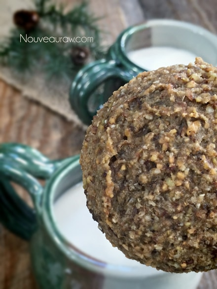
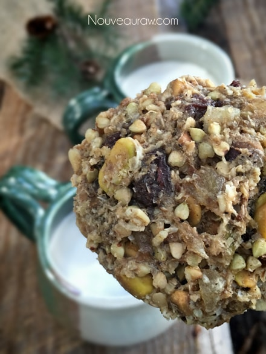

Salted Ginger and Pistachio Cookies

~ high-raw, vegan, gluten-free ~
I am calling this recipe a high-raw recipe. I have to admit that I ended up using roasted and salted pistachios by accident and truthfully I really loved the flavor that they added to this cookie. So high-raw is a recipe that is mostly raw. :)
If you take a quick peek at the second photo to the right, you will see two different looking cookies. And if you scroll to the bottom of the posting, you will see a close up of both of them. They are the same cookie, I just took the batter and divided it in half. With one-half, I made the cookies straight away. The second half of the batter went into the food processor, where I blitzed it down into a smoother consistency. You can clearly see the difference.
There is so much texture in every bite.
In tasting both, they have much in common, with little hints of flavors that pop through, but they almost seemed as if they were two different cookies. The more blended batter brought all the flavors together, whereas the chunkier batter had pockets of different flavors. Both are very enjoyable… I highly recommend that you give both textures a try and see what you think. I will say that after dehydrating both, they are firm on the outside but moist and chewy on the inside. Fits right up there with cookie-protocol. :)
Both are very enjoyable… I highly recommend that you give both textures a try and see what you think. I will say that after dehydrating both, they are firm on the outside but moist and chewy on the inside. Fits right up there with cookie-protocol. :)
I added two tablespoons of psyllium to the recipe to act as a binder and also to give the cookie a wonderful “body.” I really don’t recommend omitting it but if you can’t eat psyllium, you can use ground up chia and flax seeds instead.
I hope you enjoy these sweet and salty cookies. Now let’s get busy and get in that kitchen of yours! We have cookies to make and tummies to fill. Many blessings and please comment below. amie sue
Yields 20 (1/4 cup measurement) cookies
- 2 1/2 cups rolled, gluten-free oats, soaked
- 1 cup buckwheat, soaked
- 1 cup salted pistachios
- 1 cup raisins
- 1/2 cup diced, crystallized ginger
Preparation:
- After soaking the oats and buckwheat, drain and discard the soak water. Rinse each one until the water starts to run clear. This takes a little extra time, but well worth it.
- In a large bowl combine; oats, buckwheat, pistachios, raisins, date paste, oil, water, stevia, salt, cinnamon, black pepper, and allspice. With your hands, mix well to ensure everything gets well mixed.
- If you can’t find Allspice you can make your own by combining the following in a small jar; 2 tsp parts cinnamon, 1 tsp ground clove, 1 tsp black pepper, and 1 tsp ground nutmeg. Put the lid on and shake.
- Using a 1/4 cup cookie scoop, place the cookies on non-stick sheets that come with the dehydrator.
- I did 9 per tray, leaving space in between them.
- Once a tray is full, pick it up by the bottom 2 corners. Lightly tap the tray on the counter top 2x, turn the tray and do this on each edge. This will somewhat flatten the cookies, making them the perfect cookie shape.
- Dry at 145 degrees (F) for 1 hour, reduce to 115 degrees (F) and continue to dry for 8-10 hours or until the desired dryness/moisture is achieved.
- Half way through, transfer the cookies to the mesh sheet to speed up the dry time.
- Dry times will always vary depending on the climate, humidity, model of machine and how full it is.
- Allow to cool, then store in an airtight container. They freeze well too!
The Institute of Culinary Ingredients™
- Click (here) to learn why I use stevia.
- Dates are an amazing ingredient for raw food recipes, click (here) to read why.
- Why do I specify Ceylon cinnamon? Click (here) to learn why.
- What is Himalayan pink salt and does it really matter? Click (here) to read more about it.
- Are oats gluten-free? Yes, read more about that (here).
- Are oats raw? Yes, they can be found. Click (here) to learn more.
- Do I need to soak and dehydrate oats? Not required but recommended. Click (here) to see why.
Culinary Explanations:
- Why do I start the dehydrator at 145 degrees (F)? Click (here) to learn the reason behind this.
- When working with fresh ingredients it is important to taste test as you build a recipe. Learn why (here).
- Don’t own a dehydrator? Learn how to use your oven (here). I do however truly believe that it is a worthwhile investment. Click (here) to learn what I use.


© AmieSue.com